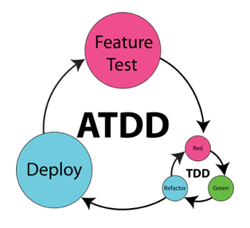

ATDD meeskonnatöö: see toob koostöö tegemiseks tarkvaraarenduse protsessis erinevad osalejad - testijad, insenerid, ärihuvirühmad. Öeldava koostöö tulemus on taotluse nõuded, mis on väljendatud kõigile arusaadavas formaadis, mis seejärel muudetakse automaatseteks vastuvõtukatseteks.
Testid sünnivad spetsifikatsioonidest, mis tulenevad aruteludest, mis hõlmavad arendajaid, testijaid ja ärigruppe või kliente.
Näide tööriistast: FIT Framework
| Head | Vead |
|---|---|
| Parandab koostööd meeskonna vahel | Võib olla kulukas ja aeganõudev alguses |
| ATDD aitab vältida vigu, kui arendaja ja äripoole ei mõista üksteise nõudeid | Keeruline, kui äriplaan pole kindlalt paigas ja tiheldalt muutmises |